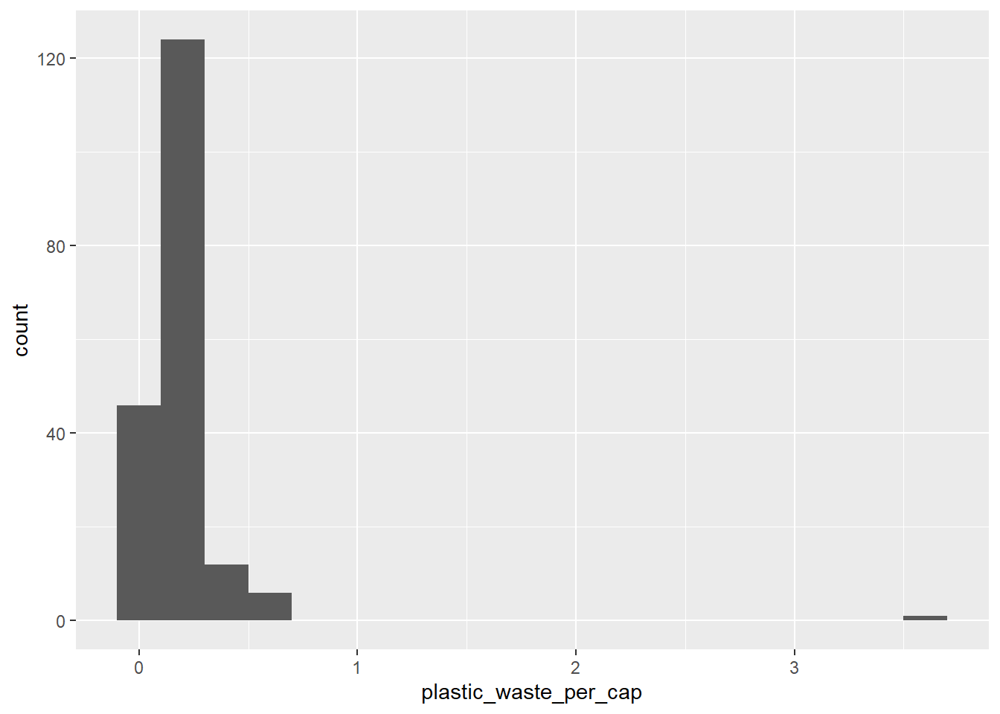
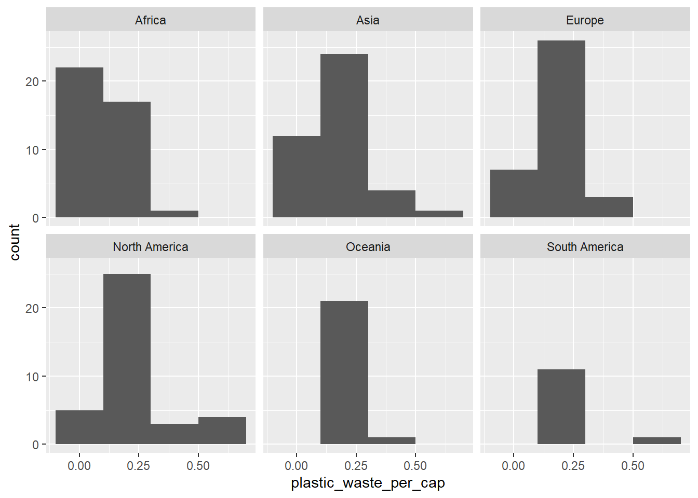
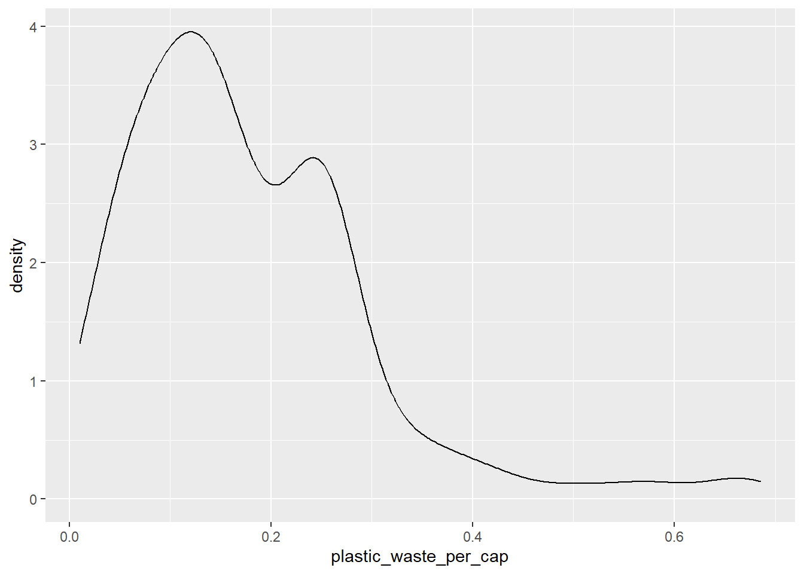
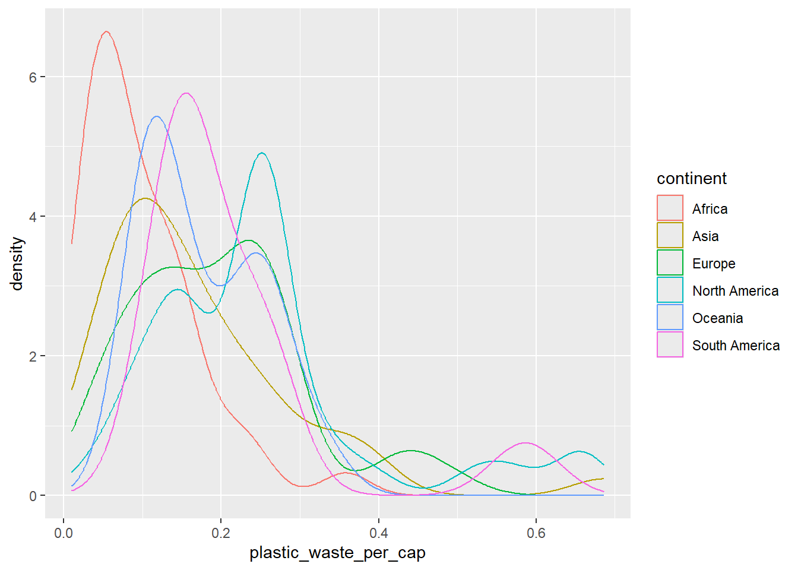
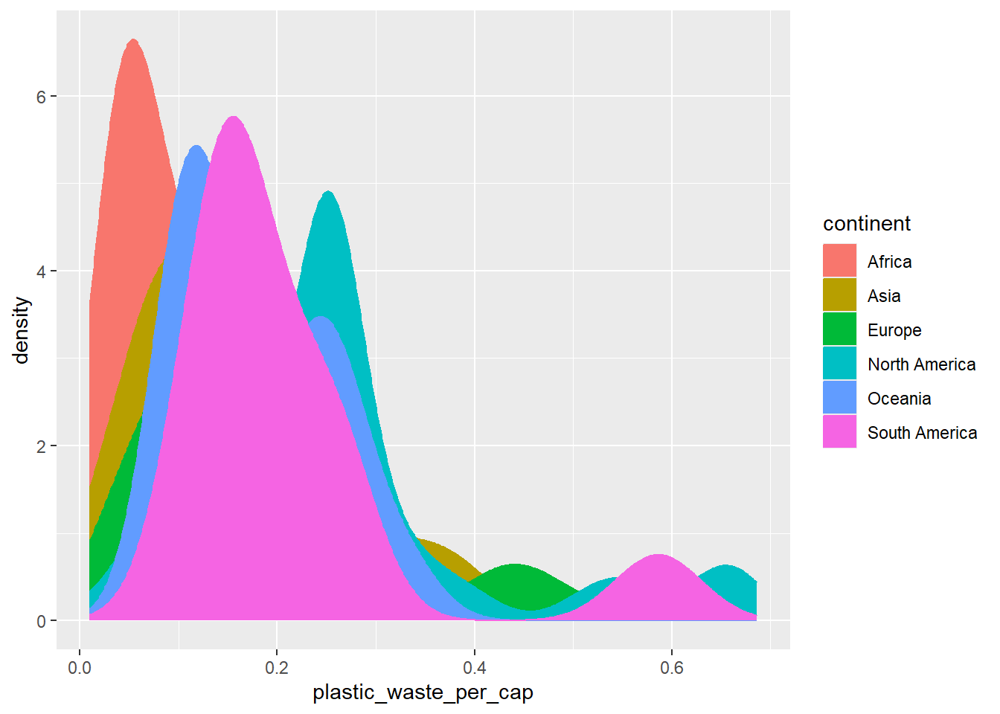
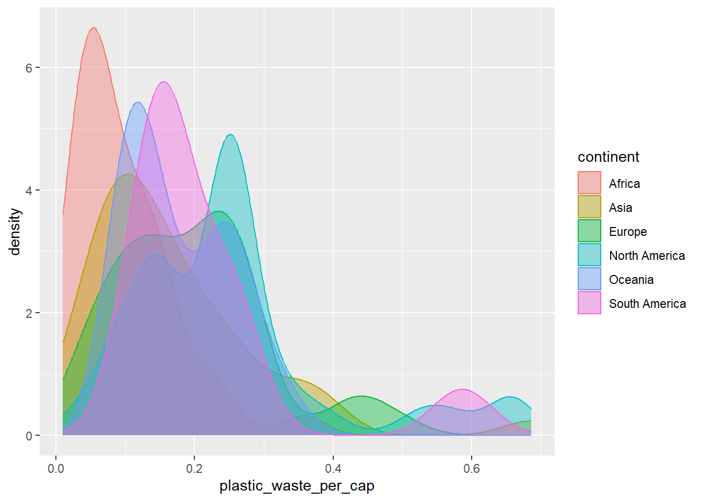
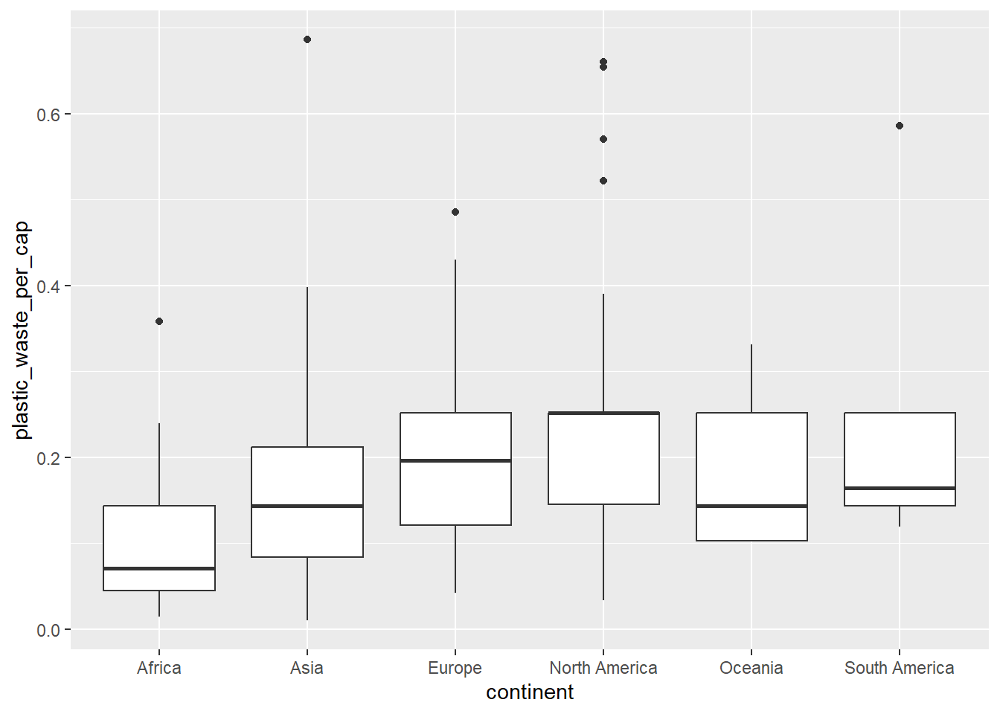
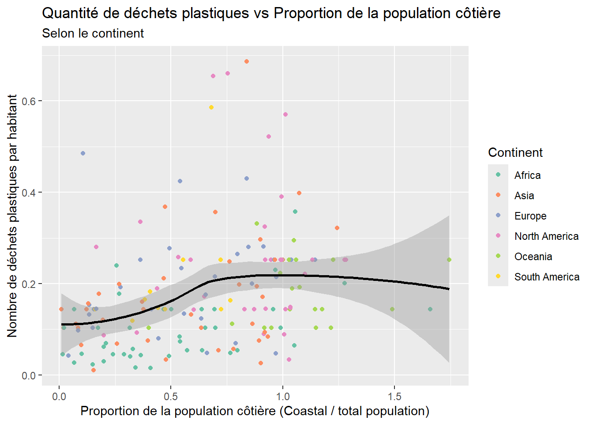

library(tidyverse)Lab 02 - Déchets plastiques
La pollution plastique est un problème majeur, avec des impacts négatifs sur les océans et ses habitants Our World in Data possède de nombreux jeux de données à différents niveaux (globaux, par pays et sur le temps). Pour ce laboratoire, nous allons travailler avec les données de 2010.
National Geographic a lancé un concours de communication par visualisation de données sur le thème des déchets plastiques : lien.
Objectifs
- Visualisation de données quantitatives et qualitatives.
- Interprétation de visualisations
- Recréer des visualisations
- Se pratiquer à utiliser R, RStudio, Git, and GitHub
Pour commencer
Nous allons utiliser GitHub Classroom pour que vous puissiez rendre vos réponses. Sur le portail de cours, vous trouverez un lien vers un assignment.
- Cliquez sur le lien
- Connectez vous avec votre compte Github si ce n’est pas fait
- Acceptez l’assignment
- Liez votre compte avec votre nom d’étudiant
Vous devriez maintenant voir un repository appelé Lab02-[votre-username] où devrait être votre nom d’utilisateur GitHub.
Sur la page du repository:
- Cliquez sur le bouton vert:

- Copiez le lien terminant en
.git- Quelque chose ressemblant à
https://github.com/PRO1036/lab02-[votre-username].git
- Quelque chose ressemblant à
Dans RStudio:
- Fichier > Nouveau Projet
- Version Control > Git
- Dans Repository URL : indiquez l’adresse copiée à l’étape précédente
- Choisissez un nom pour le dossier qui sera créé, par exemple “Lab02”
- Choisissez où vous voulez créer le projet dans votre ordinateur.
Cela va copier les fichiers présents sur GitHub, et les copier dans le dossier spécifié.
Pour commit vos résultats
Dans RStudio, ouvrez le panneau Git sur la droite. Sélectionnez les fichier que vous souhaitez commiter en cliquant sur la petite boite blanche. Un petit A vert devrait apparaitre dans la colonne Status.
Cliquez ensuite sur Commit. Entrez un message décrivant l’étape que vous avez complétée.
Pour envoyer vos résultats sur Github
Cliquez sur la flèche verte Push. Il est possible que vous deviez vous connecter à votre compte Github avant que l’envoie soit complet.
Sur Github, vous pouvez aller voir les modifications que vous avez apportées.
Packages
Comme d’habitude, nous allons utiliser le tidyverse pour cette analyse.
Données
Le jeu de données pour ce lab peut être trouvé dans le dossier data présent dans le repo. Nous reparlerons du chargement de données locales plus tard mais pour l’instant il suffit de lancer cette ligne:
plastic_waste <- read_csv("data/plastic-waste.csv")Les variables présentes dans le jeu de données sont:
code: 3 lettres pour le code paysentity: nom du payscontinent: nom du continentyear: annéegdp_per_cap: PID par habitant en $ (2011)plastic_waste_per_cap: quantité de déchets plastiques par habitant en kg/jourmismanaged_plastic_waste_per_cap: quantité de déchets plastiques non gérés par habitant en kg/jourmismanaged_plastic_waste: quantité de déchets plastiques non gérés en tonnescoastal_pop: Nombres de personnes vivant sur des côtestotal_pop: Population totale selon Gapminder
Warm up
Rappel
Ce que vous écrivez dans votre fichier Rmd n’est pas exécuté dans la console et vice-versa. Les lignes dans le Rmd seront exécutées au moment du knit. Vous pouvez aussi les copier dans la console mais n’oubliez pas qu’il faut copier les lignes précédentes également !
- Quelles sont les quatre zones présentes sur RStudio ?
- Combien y a-t-il d’observations dans le jeu de données ? Vous pouvez également vous aider des fonction
nrows,ncolsetdim. Si vous avez chargé les données dans la console, elles apparaitrons dans l’environnement. Depuis la console, vous pouvez également utiliserView(plastic_waste)pour voir le tableau. - En regardant les données, vous voyez que certaines cellules ont comme valeurs
NA. Que cela signifie-t-il ?
Tip
Vous pouvez utiliser l’aide depuis la console en utilisant ?NA
Exercices
Commençons par regarder la distribution générale des déchets plastiques par habitant en 2010
ggplot(data = plastic_waste, aes(x = plastic_waste_per_cap)) +
geom_histogram(binwidth = 0.2)Warning: Removed 51 rows containing non-finite outside the scale range
(`stat_bin()`).
Sur la droite, il semble qu’un pays sorte du lot et présente une importante quantité de déchets. Une manière d’identifier ce pays consiste à filtrer les données pour afficher les valeurs supérieures à 3.5 kg/personne.
plastic_waste %>%
filter(plastic_waste_per_cap > 3.5)# A tibble: 1 × 10
code entity continent year gdp_per_cap plastic_waste_per_cap
<chr> <chr> <chr> <dbl> <dbl> <dbl>
1 TTO Trinidad and Tobago North Ameri… 2010 31261. 3.6
# ℹ 4 more variables: mismanaged_plastic_waste_per_cap <dbl>,
# mismanaged_plastic_waste <dbl>, coastal_pop <dbl>, total_pop <dbl>Aviez-vous anticipé ce résultat ?
Note
Vous pourriez faire une rapide recherche sur Trinité-et-Tobago pour essayer de comprendre pourquoi le chiffre est haut, ou bien s’il s’agit d’une erreur de saisie dans les données.
À partir d’ici, nous allons retirer Trinité-et-Tobago des données pour le reste du lab.
plastic_waste <- plastic_waste %>%
filter(plastic_waste_per_cap < 3.5)
Caution
À partir d’ici, vous allez devoir recréer ou créer des visualisations !
Exercice 1
À l’aide d’un histogramme, affichez la distribution des quantité de déchets par habitant, en ajoutant une facette par continent. Que pouvez-vous dire de la comparaison des continents, en terme de déchets plastiques ?

Exercice 2
Une autre manière consiste à utiliser des graphes de densité. Recréez le graphe suivant.

Colorez les courbes de densité par continent

Le graphe obtenu peut être un peu difficile à lire, essayez de remplir les courbes avec des couleurs.

La superposition des couleurs n’aide pas à la lecture du graphe. Nous pouvons changer la transparence de la couleur des courbes. Changez le alpha pour améliorer la qualité du graphe. Essayez plusieurs valeurs pour trouver quelque chose de convenable.

Décrivez pourquoi le reglage de la couleur (color et fill) et le réglage de la transparence (alpha) ne se trouvent pas au même endroit ? L’un étant réglé dans aes et l’autre dans geom_density()
🧶 ✅ ⬆️ C’est le bon moment pour knitt, commit et push !
Exercice 3
Les boxplot sont aussi une bonne manière de visualiser des relations. Reproduisez le graphe suivant.

Faites un grpahe similaire en utilisant les violin plots. Qu’est ce que les violin plots permettent de voir sur les données que les boxplot ne permettent pas ?
Exercice 4
Visualisez la relation entre la quantité de déchet et la quantité de déchets non gérés en utilisant un graphe de dispersion (scatter plot). Décrivez la relation.
Colorez les point selon le continent. Voyez-vous une tendance ?
Exercice 5
Visualisez la relation entre la quantité de déchets plastiques par habitant et le nombre total d’habitants, et dans un second graphe, la relation entre la quantité de déchets plastiques et le nombre total d’habitants vivant près d’une côte. Est-ce qu’il semble y avoir une relation plus forte pour l’une des paires de variables ?
🧶 ✅ ⬆️ C’est le moment de knitt, commit et push ! N’oubliez pas d’ajouter un message à votre push
Conclusion
Pour finir, essayer de refaire le graphe suivant:

Pour cela, nous devons manipuler les données légèrement pour calculer la proportion de population côtière. Nous verrons dans les prochaines semaine comment faire cela mais vous pouvez pour le moment utiliser les données suivantes:
plastic_waste_coastal <- plastic_waste %>%
mutate(coastal_pop_prop = coastal_pop / total_pop) %>%
filter(plastic_waste_per_cap < 3)
Note
Nous avons calculé une nouvelle variable, la proportion de population côtière, appelée coastal_pop_prop, à partir du nombre d’habitants vivant sur une côte et du nombre d’habitants total. Nous avons également fitré le pays avec une quantité de déchets par habitant supérieure à 3 kg/jour.
Vous voyez que le graphe ne comporte pas seulement les points de données mais également une courbe de tendance. Pour ajouter cela, vous pouvez aller lire comment utiliser la fonction smooth : Documentation
Pour terminer, interprétez ce que vous observez !
🧶 ✅ ⬆️ C’est la dernière étape ! Assurez que votre document final soit complet et propre. Notamment, certains graphes ne sont pas légendés ni nécessairement très beaux. N’hésitez pas à les modifier pour les compléter. Quand tout est bon: knitt, commit et push !